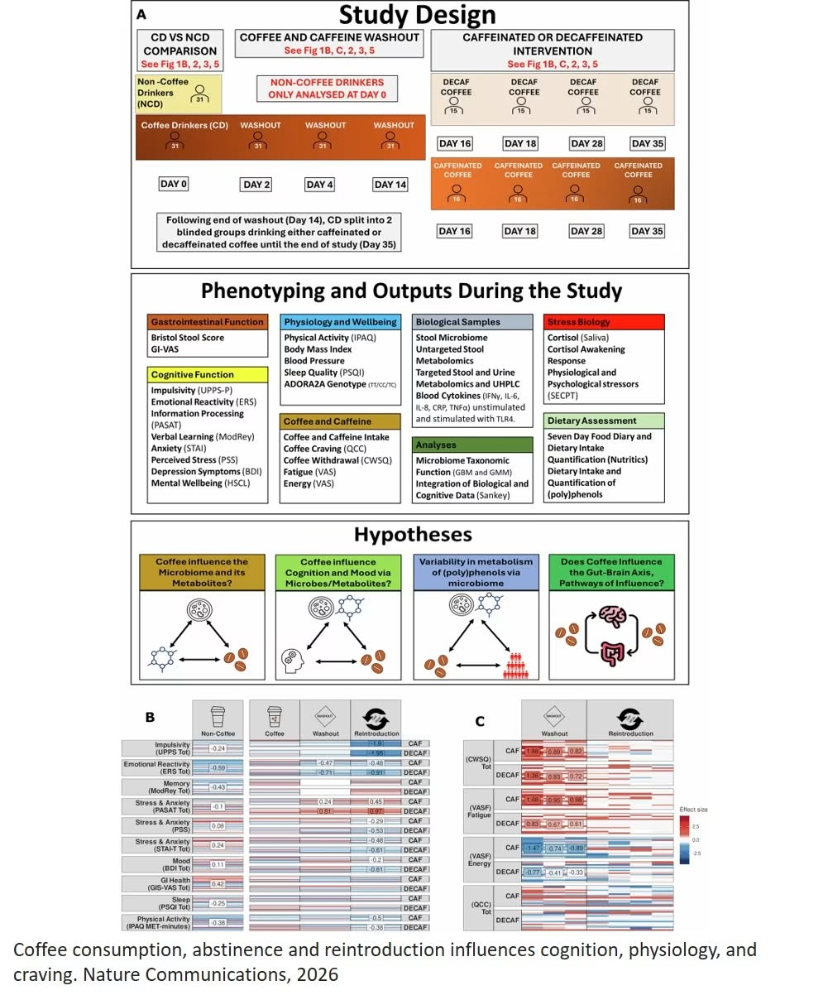

Case report: major Alzheimer's symptom improvement after fecal microbiota transplantation
Louis shares a case report of an 82-year-old man with Alzheimer's whose cognition improved rapidly after FMT. A single case cannot show effectiveness.
37 posts
Louis shares a case report of an 82-year-old man with Alzheimer's whose cognition improved rapidly after FMT. A single case cannot show effectiveness.
Louis summarizes the oatmeal study, noting participants had BMI over 30 with metabolic syndrome and ate 1100-1200 kcal/day; controls on the same diet did not see the same benefit.
A first-of-its-kind Memorial Sloan Kettering trial gave 20 overweight people with precursor blood disorders 12 weeks of plant-based meals with coaching. None had progressed at one year, and two with previously progressing disease improved. Researchers think increased gut butyrate may be involved; a 150-person trial (NUTRIVENTION-3) is enrolling.
Louis shares a 2026 review of wild blueberries and cardiometabolic health, saying the strongest and most consistent evidence is for improved vascular function.
Louis argues statins are not toxic to muscle in most people. Myalgia occurs in some, possibly with a genetic susceptibility, while rhabdomyolysis is very rare (about 1 in 100,000, or 1 in 10,000 conservatively). Switching statins (e.g., to pravastatin or pitavastatin) or using non-statin LDL drugs can help, and low-dose statins are being studied as a treatment for sarcopenia.
Louis argues statins are not toxic to muscle at normal doses in most people. Statin myopathy occurs in genetically susceptible people, while rhabdomyolysis is very rare (1 in 100,000, or 1 in 10,000 conservatively). Low-dose statins and metformin are being studied for sarcopenia via hormetic mitochondrial effects.
Louis shares two randomized trials of peanut butter. In 120 older adults at fall risk, 43 g/day for six months improved sit-to-stand speed and muscle power without changing weight; a separate 6-month trial in young adults (ARISTOTLE) found better memory and stress response.

Louis argues berberine's very low oral bioavailability (<1%) means its main anti-diabetic action is via gut bacteria, unlike metformin. The shared post cites human pharmacokinetics (Spinozzi 2014) finding mostly the metabolite berberrubine in plasma.

Louis shares an ATVB editorial describing statin-induced gut microbiota changes as a candidate mechanism for statin-associated new-onset type 2 diabetes. The editorial says causality still needs larger sequencing studies. Louis adds that in JUPITER, high-dose rosuvastatin raised A1C by 0.1, bringing diabetes diagnosis about 5.4 weeks earlier over 2 years, a small but real effect.
Louis shares a video on oats lowering cholesterol with a microbiome mechanism. The video is unavailable so no details survive.
A detailed explainer on ImP, a gut-microbial metabolite elevated in type 2 diabetes, atherosclerosis, heart failure, kidney disease and fatty liver. It is made from dietary histidine by specific bacteria in dysbiotic guts and is more tied to microbiome composition than to histidine intake, so a diverse, high-fiber microbiome is protective.
Louis asks whether group members take Akkermansia probiotics, often advertised as a natural GLP-1 booster, and points to a Harvard Medical School report linking Akkermansia levels in the gut to poor bone health. No numbers are given in the post.
Louis quotes a 2018 review concluding that gut microbiota participate in metformin's glucose-lowering effects in diabetes. Metformin alters gut bacterial composition, but the exact mechanisms still need to be worked out.

A short post defining prebiotics as non-digestible fibers feeding beneficial gut bacteria and probiotics as live bacteria that make up the beneficial portion of the gut microbiome.

Louis shares Layne Norton's summary of a new long-term randomized trial of artificial sweeteners during weight-loss maintenance, which found better weight maintenance and no adverse cardiometabolic effects versus a low-sugar diet alone, with gut findings worth more study. Louis does not recommend sweeteners but wants the evidence stated accurately.
Louis shares a 2016 randomized double-blind trial in which 12 weeks of daily Lactobacillus and Bifidobacterium probiotics yielded a moderate but significant improvement in Alzheimer's patients' cognitive scores. It was a small trial.
A review-style explainer on organic versus conventional food. It clarifies that the USDA Organic label certifies farming practices rather than health claims, and that organic farming still permits some pesticides. The core tension is a clear drop in pesticide exposure against more complex evidence for long-term health benefit.

A comprehensive overview of glyphosate use and the regulatory split over its safety. Use rose about 15-fold after GM crops in 1996, and pre-harvest desiccation of oats, wheat and legumes explains high residues in some non-GM foods. IARC and other agencies reached different conclusions on cancer risk.

Image post listing strategies for microbiome health, tagged with fermented foods. Details not given in text.
Louis describes eating only two meals per day for eight years and argues that cutting calories and avoiding snacking is among the most useful things for health. He shares a Tim Spector video suggesting this pattern may also benefit the gut microbiome.

Medscape reports that coffee's effect on gut motility seems to involve other compounds interacting with microbiota, as caffeine alone did not speed recovery after GI surgery.

A shared summary of a Cell Metabolism study in which gut-microbe-produced D-lactate drives hepatic glucose and fat overproduction in obese mice and humans. Researchers also developed a gut 'substrate trap' to counter it. Posted with hashtags only; details come from the shared text.

Louis shares a summary of a double-blind precision RCT in 240 adults with prior colorectal polyps taking magnesium glycinate for 12 weeks, dosed to lower the calcium:magnesium ratio. In participants with a normal TRPM7 'magnesium gate', beneficial bacteria rose, with effects strongest in women.

A shared post says studies show metformin increases helpful gut species such as Akkermansia and Bacteroides that improve glucose control. Findings are mostly in animals and organoids; no bacteria have replaced metformin in large human trials.
Scientific American reports researchers found metformin causes gut cells to take up more glucose, adding to its glucose-lowering effect. Evidence dates to a 1989 rat study and later imaging findings.

A Nature Medicine study of 77 healthy Tanzanian men tested a switch between a traditional Kilimanjaro diet and a Western diet, plus a Western diet with the fermented banana drink mbege. The Western diet quickly increased weight and inflammatory and cardiometabolic proteins, while the heritage diet and mbege reduced inflammatory markers.
A phase II trial in Science Advances found that the constipation drug lubiprostone (16 ug daily) preserved eGFR over 24 weeks versus decline on placebo. Surprisingly, it did not cut uremic toxins; instead it shifted the gut microbiome and raised spermidine. Kidney disease commonly accompanies heart disease.

Louis shares a summary of a Life Metabolism study in 160 coronary artery disease participants plus human blood and mice. Intermittent fasting appeared to inhibit platelet activation and clot formation through increased gut microbial production of indole-3-propionic acid.

A shared infographic describes bidirectional gut-brain communication: vagus and enteric neural signaling, microbiota effects on the HPA axis and hormones such as GLP-1, immune cytokines, and metabolites like short-chain fatty acids. Louis adds that gut health is brain health.

Louis reshares a figure showing how high-fat, low-fiber diets and additives like emulsifiers and sweeteners shift microbial balance, weaken the gut barrier and drive low-grade inflammation linked to chronic disease. Fiber and short-chain fatty acids are highlighted.

An advocacy-style essay arguing that glyphosate should be avoided. It cites the 2015 IARC classification as probably carcinogenic to humans, based on limited human evidence of non-Hodgkin lymphoma, sufficient animal evidence and strong mechanistic evidence. Not specific to heart disease.

The shared description of the DIABMET-FMT randomized trial says repeated fecal microbiota transplant capsules from lean, metabolically healthy donors improved insulin sensitivity, microbiome diversity and short-chain fatty acid production in adults with type 2 diabetes, without diet, drug or exercise changes. The poster sees it as evidence that the microbiome contributes to diabetes in some people. The details come from the post only and could not be verified here.

Louis reshares a figure showing how an unhealthy microbiome weakens the gut barrier, lets bacterial toxins leak into the bloodstream and drives chronic inflammation and metabolic dysfunction.

A shared summary of a study comparing 31 habitual coffee drinkers (3-5 cups/day) with 31 non-drinkers, assessing microbiome, mood and stress, including a two-week abstinence period.
Louis says the totality of evidence suggests plant- and dairy-based fermented foods do not raise stomach cancer risk. Salt preservation does seem to be associated with higher risk, likely from the high sodium content rather than fermentation, and many fermented foods are also salty, which confounds studies.

Louis shares a Stanford Medicine 'Five facts' article on fiber, which feeds the gut microbiome and supports digestion yet most people don't get enough. The post itself contains no further detail.
Louis shares a Tim Spector clip arguing elimination diets can damage the microbiome, damage that may be hard to repair, so short-term benefits should be weighed against long-term risk.